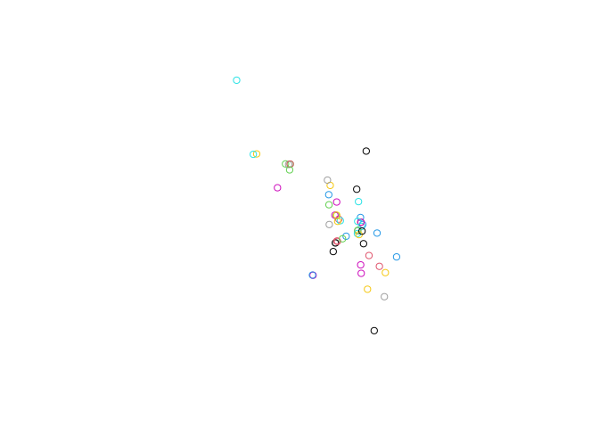

opendatascotland is an R package to download and locally cache data from the amazing opendata.scot website. This helps to quickly start data analysis by providing a simple way to save, organise and import data in R.
Installation
You can install the development version of opendatascotland from GitHub with:
# install.packages("devtools")
devtools::install_github("fozy81/opendatascot")Search
Search all available datasets by using the ods_search() function. Additionally, use the search argument to filter datasets by title.
library(opendatascotland)
# View all available datasets and associated metadata
all_datasets <- search_ods()
# Search dataset titles containing matching terms (case insensitive)
single_query <- search_ods("Number of bikes")
# Search multiple terms
multi_query <- search_ods(c("Bins", "Number of bikes"))
head(multi_query, 4)
#> # A tibble: 4 × 11
#> unique_id title organization notes category url resources licence
#> <chr> <chr> <chr> <chr> <list> <chr> <list> <chr>
#> 1 Communal_Bins_City_… Comm… City of Edi… "<p>… <chr> /dat… <df> No lic…
#> 2 Grit_Bins_City_of_E… Grit… City of Edi… "<p>… <chr> /dat… <df> No lic…
#> 3 Salt_Bins_Dumfries_… Salt… Dumfries an… "<p>… <chr> /dat… <df> UK Ope…
#> 4 Public_Litter_Bins_… Publ… Dundee City… "<p>… <chr> /dat… <df> UK Ope…
#> # … with 3 more variables: date_created <chr>, date_updated <chr>,
#> # org_type <chr>Note, search term is case-insensitive but word order must be correct (there is no ‘fuzzy’ matching).
Download
Currently, only datasets available in .csv, .json or .geojson can be downloaded. These formats cover the majority of data available. You will be warned if data can’t be downloaded.
To download data, you can either download the metadata using search_ods(), then pass that data frame to get_ods()
query <- search_ods("Grit bins")
data <- get_ods(query)
#> 'Grit Bins' dataset was last downloaded on 2022-07-31
#> 'Grit Bins' dataset was last downloaded on 2022-07-31Or use the search argument in get_ods(search="my search term") to search and download matching datasets in one step.
data <- get_ods(search = "Grit bins")
#> 'Grit Bins' dataset was last downloaded on 2022-07-31
#> 'Grit Bins' dataset was last downloaded on 2022-07-31By default, you will be asked if you want to save the data locally on the first download. Optionally, you can refresh the data or avoid being asked to save data.
data <- get_ods(search = "Number of bikes", refresh = TRUE, ask = FALSE)Plot
data <- get_ods(search = "Air Quality - Diffusion Tubes")The get_ods() function returned a named list of data frames - lets select the one we want by name:
air_tubes <- data$`Air_Quality_-_Diffusion_Tubes_Aberdeen_City_Council`Or alternatively select the first data frame in the list using index of 1.
air_tubes <- data[[1]]Geojson datasets are automating converted to simple feature ‘sf’ data. As we can see in the example the data frame is classed as “sf” which mean spatial / geometry coordinates are held in a geometry column.
class(air_tubes)
#> [1] "sf" "data.frame"These allows the plot() function to automatically plot the coordinates in the geometry column.
